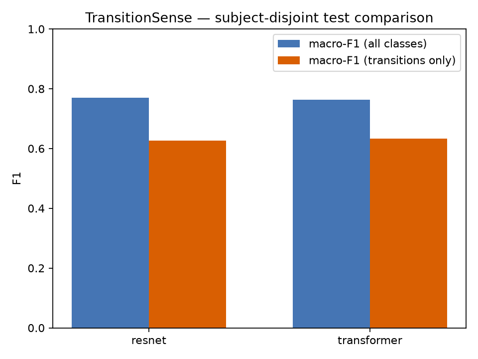
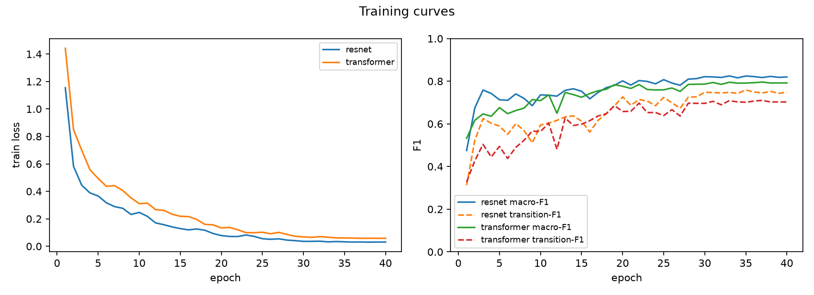
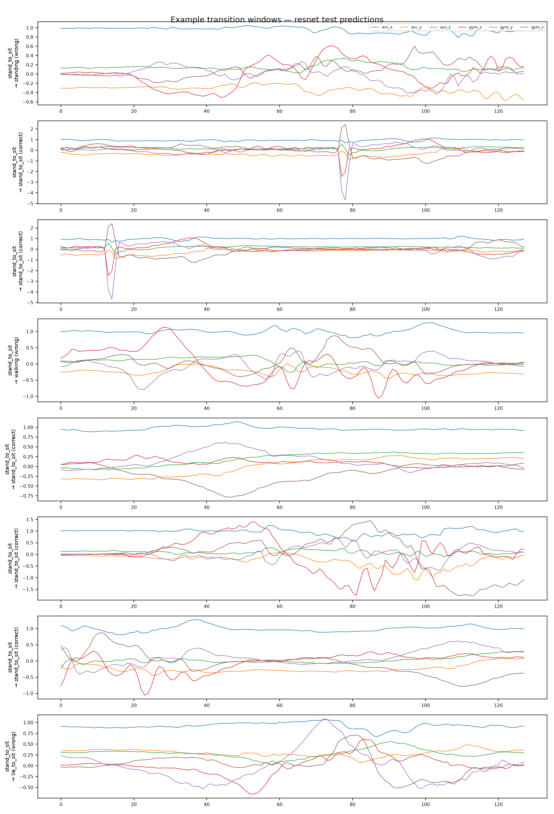
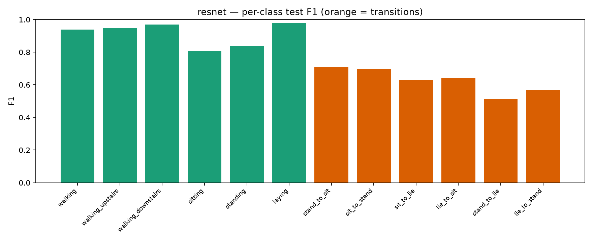
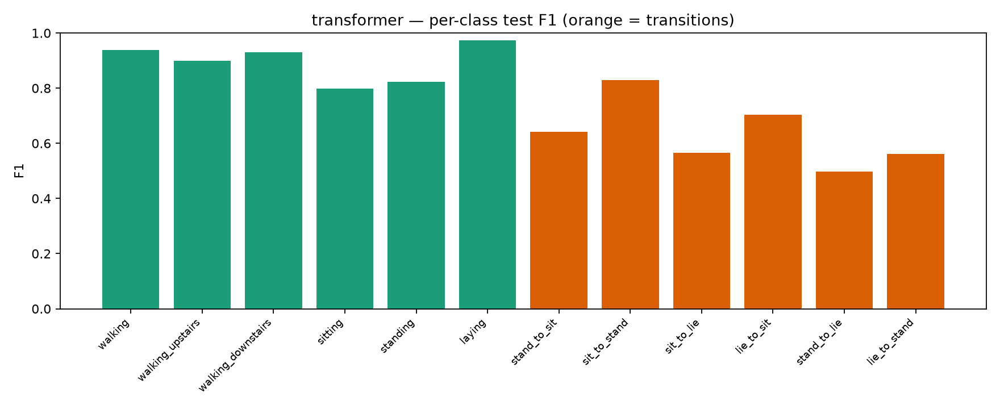
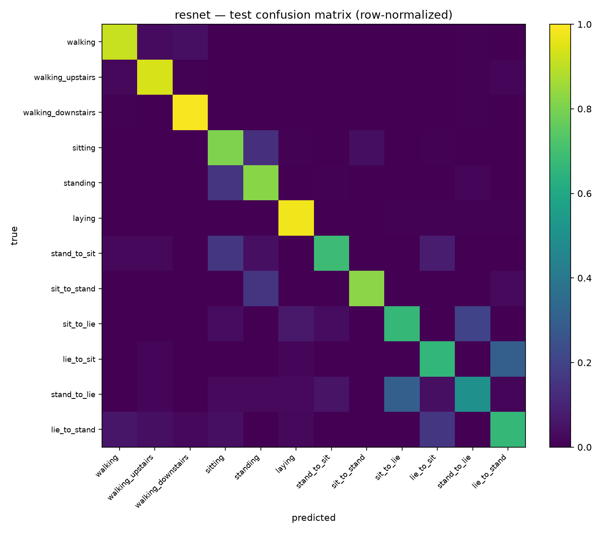
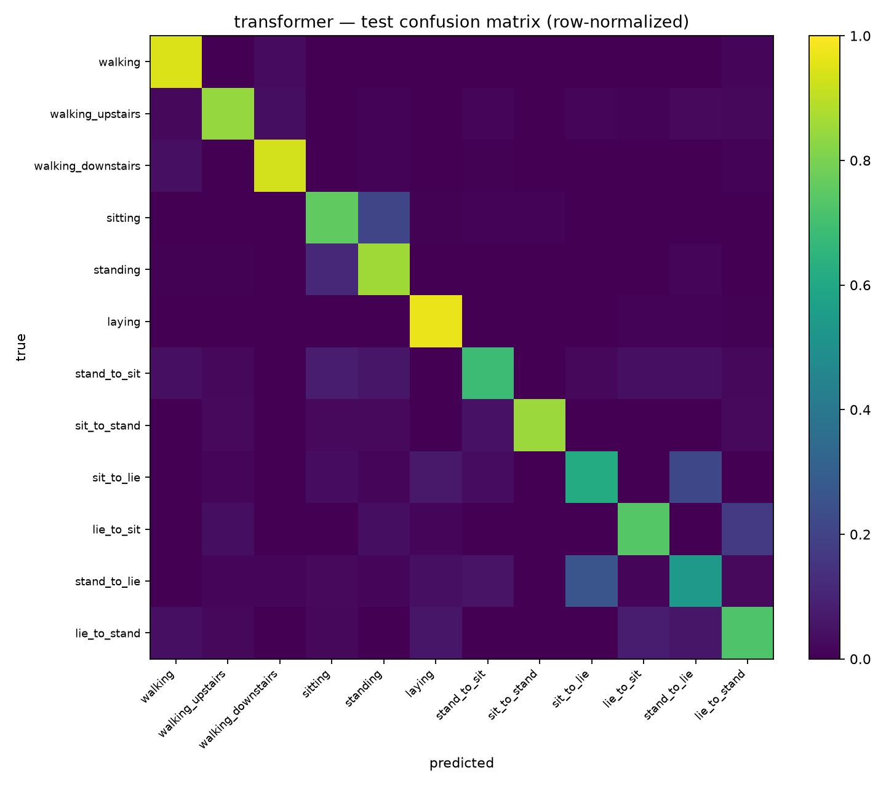

TimeNet Online Hackathon 2026 — temporal-language-model fine-tuning vs conventional depth models for postural-transition recognition on unseen subjects.
UCI HAPT v2.1 via the uci/hapt TimeNet connector: 61 continuous trials,
six IMU channels (accelerometer in g, gyroscope in rad/s) at 50 Hz, 1,214 scoped
classification tasks, 12 classes (6 activities + 6 postural transitions).
Windows: 128 samples, stride 64, centre-sample labelling. All splits are
subject-disjoint; the test split uses the official UCI held-out subjects.
| split | subjects | subject ids |
|---|---|---|
| train | 17 | 1, 3, 6, 7, 8, 11, 14, 16, 17, 19, 21, 22, 23, 26, 27, 28, 29 |
| validation | 4 | 5, 15, 25, 30 |
| test | 9 | 2, 4, 9, 10, 12, 13, 18, 20, 24 |
Every number below is read from saved test_metrics.json artifacts.
| Model | macro-F1 | transition macro-F1 | accuracy | parse rate | params | windows |
|---|---|---|---|---|---|---|
| resnet | 0.7695 | 0.6257 | 0.8846 | 1.000 | 242700 | 3718 |
| transformer | 0.7632 | 0.6328 | 0.8655 | 1.000 | 540044 | 3718 |






